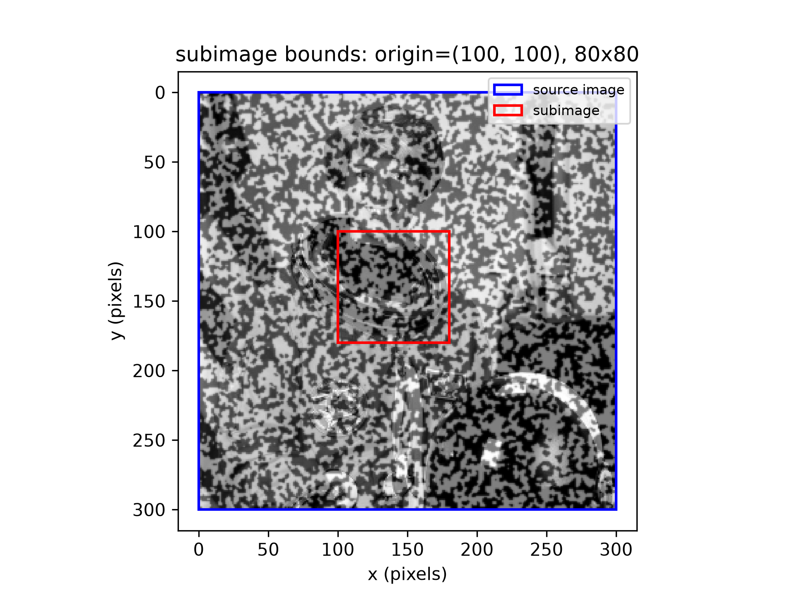
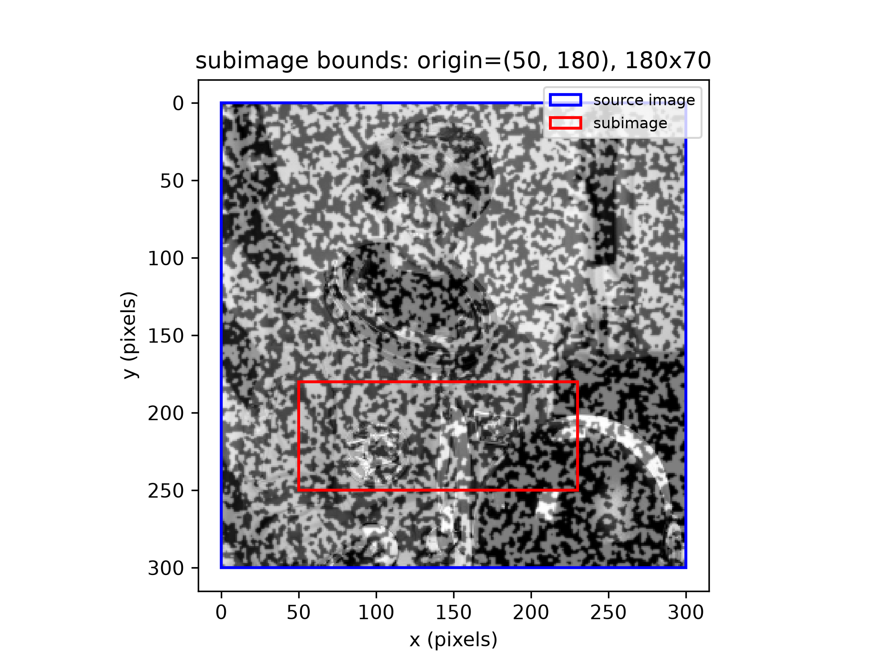
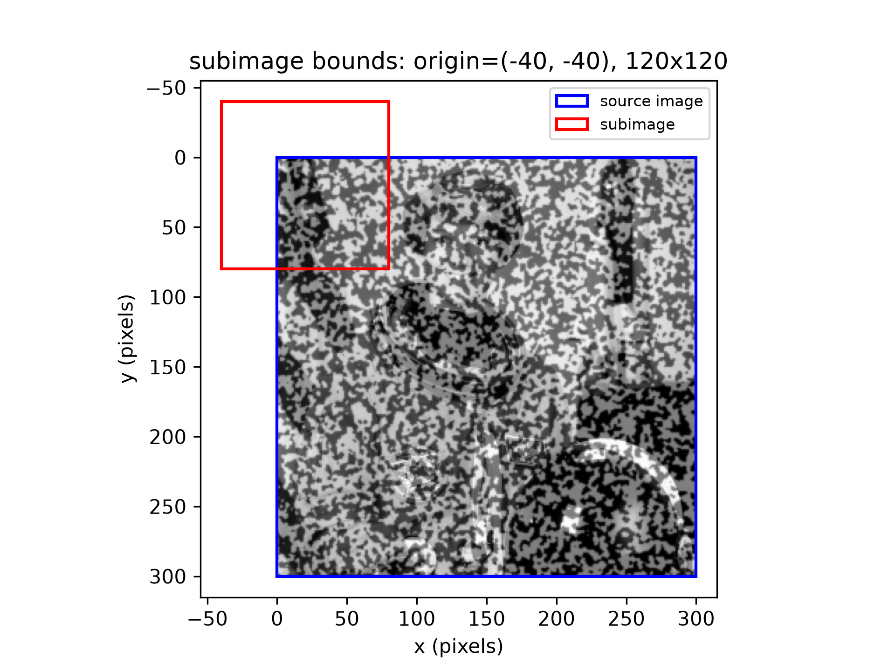
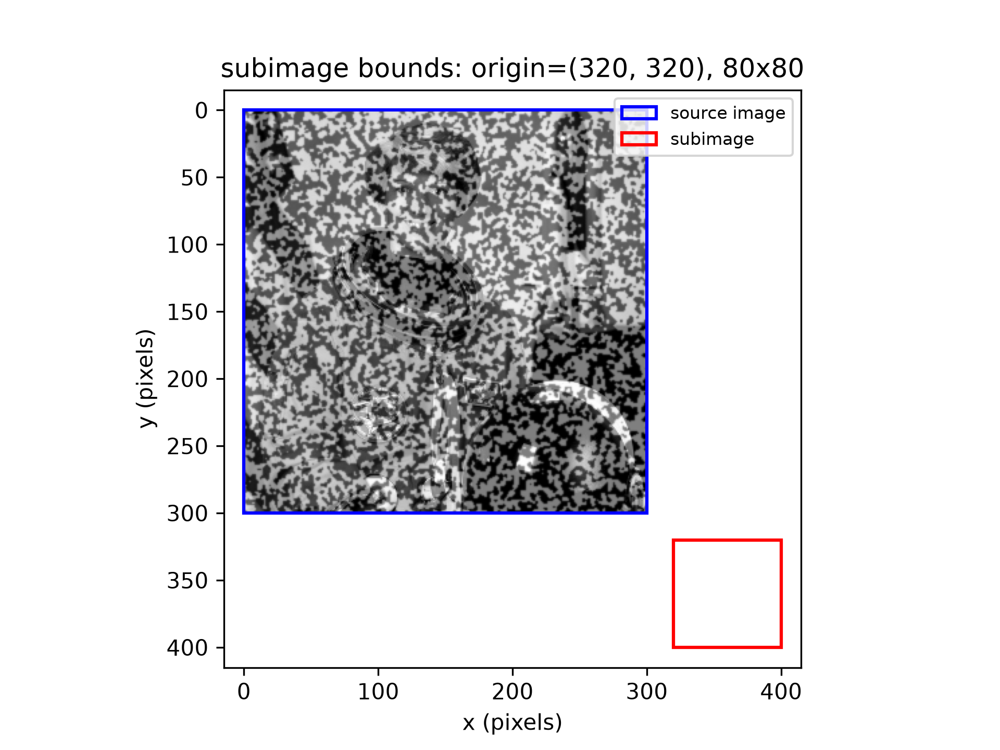
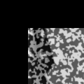

Subimage Generation
dictk.imaging.subimage extracts a
rectangular crop from a source image: a width x height region whose
top-left corner sits at origin, expressed in the source image's own
pixel reference frame (top-left corner (0, 0)). origin may place the
requested region partially or completely outside the source image —
rather than raising an error, subimage fills whatever doesn't overlap
with black (zero) pixels, so the result is always a well-formed
height x width array. This is the building block later tutorials use to
pull a kernel or search area out of a larger reference/current image pair
around a point of interest.
Reference image
The examples below reuse astronaut0, the speckle pattern combined with
the astronaut photo introduced in Image
Generation:
import dictk
from dictk.imaging import combine_images, write_image
speckle = dictk.rosta(300, 300, density=0.5)
photo = dictk.astronaut(300, 300)
astronaut0 = combine_images(speckle, photo)
write_image(astronaut0, "astronaut0.png")
Saved image: astronaut0.png
CLI
dictk subimage-bounds visualizes where a subimage would be cropped
from, drawing the source image's own bounds in blue and the requested
region in red, saved as a PNG:
dictk subimage-bounds --help
usage: dictk subimage-bounds [-h] [--output OUTPUT]
source origin_x origin_y width height
positional arguments:
source Path to the source image file (path), required.
origin_x Subimage origin x-coordinate in pixels (int),
required.
origin_y Subimage origin y-coordinate in pixels (int),
required.
width Subimage width in pixels (int), required.
height Subimage height in pixels (int), required.
options:
-h, --help show this help message and exit
--output OUTPUT, -o OUTPUT
Output directory (path), default: current directory.
Square, fully inside
An 80x80 square region entirely within astronaut0's 300x300 bounds:
dictk subimage-bounds astronaut0.png 100 100 80 80 -o .
Saved image: subimage_bounds_80w_by_80h_at_100_100.png

Rectangle, fully inside
A 180x70 region — wider than it is tall — also entirely within bounds:
dictk subimage-bounds astronaut0.png 50 180 180 70 -o .
Saved image: subimage_bounds_180w_by_70h_at_50_180.png

Partially outside
A 120x120 region with a negative origin, straddling the source image's
top-left corner. subimage fills the part of the region above and to
the left of the source with black:
dictk subimage-bounds astronaut0.png -40 -40 120 120 -o .
Saved image: subimage_bounds_120w_by_120h_at_-40_-40.png

Completely outside
An 80x80 region entirely beyond the source image's bounds — no overlap at all, so the result is entirely black:
dictk subimage-bounds astronaut0.png 320 320 80 80 -o .
Saved image: subimage_bounds_80w_by_80h_at_320_320.png

Python API
dictk.imaging.subimage returns
the cropped array directly, with no file written — the CLI's
subimage-bounds command is a visualization built on top of it, not the
only way to call it.
dictk.imaging.PixelCoordinate
is a simple (x, y) NamedTuple used for origin.
from dictk import astronaut, rosta
from dictk.imaging import PixelCoordinate, combine_images, subimage, write_image
speckle = rosta(300, 300, density=0.5)
photo = astronaut(300, 300)
astronaut0 = combine_images(speckle, photo)
# The "Partially outside" case above: origin (-40, -40) straddles the
# top-left corner, so the top-left of the result is zero-padded.
region = subimage(astronaut0, PixelCoordinate(x=-40, y=-40), width=120, height=120)
write_image(region, "subimage_-40_-40_120x120.png")
print(f"shape={region.shape}, dtype={region.dtype}, top-left pixel={region[0, 0]}")
shape=(120, 120), dtype=uint8, top-left pixel=0

astronaut0.dictk.imaging.plot_subimage_bounds
is the function behind the CLI command above, callable directly on an
in-memory array without writing the source image to disk first:
from dictk.imaging import PixelCoordinate, plot_subimage_bounds
plot_subimage_bounds(
astronaut0, PixelCoordinate(x=-40, y=-40), width=120, height=120,
path="subimage_bounds_api.png",
)
Saved image: subimage_bounds_api.png